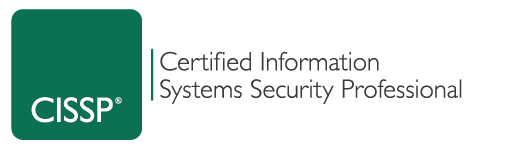

I teach Computer Information Systems at Mt. San Antonio College. I possess a Bachelor of Science in Business Management, a Master of Arts in Music, and I am a Certified Information Systems Security Professional (CISSP). Please review my Professional Training & Certifications page for more information.
I am offering the following courses in Fall 2022.
I pursue professional development as an instructor, as well as in Information Technology and Security. The courses that I teach are designed around creating a positive learning environment while encouraging students' success in the process of learning.
Please take a look at my Teaching Philosophy for more detailed information.
Sable Cantus, CISSP
